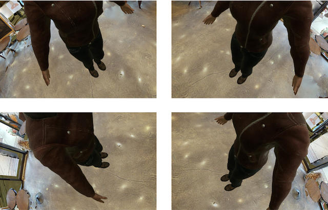
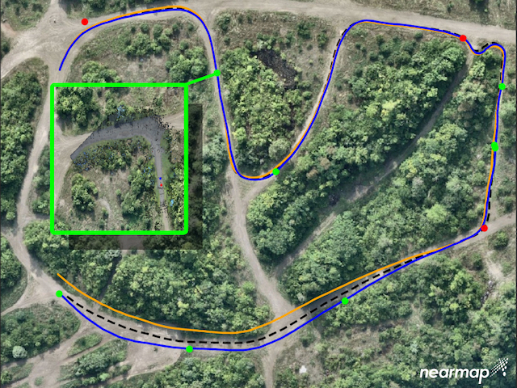
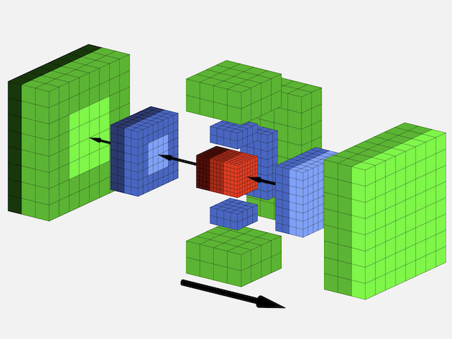
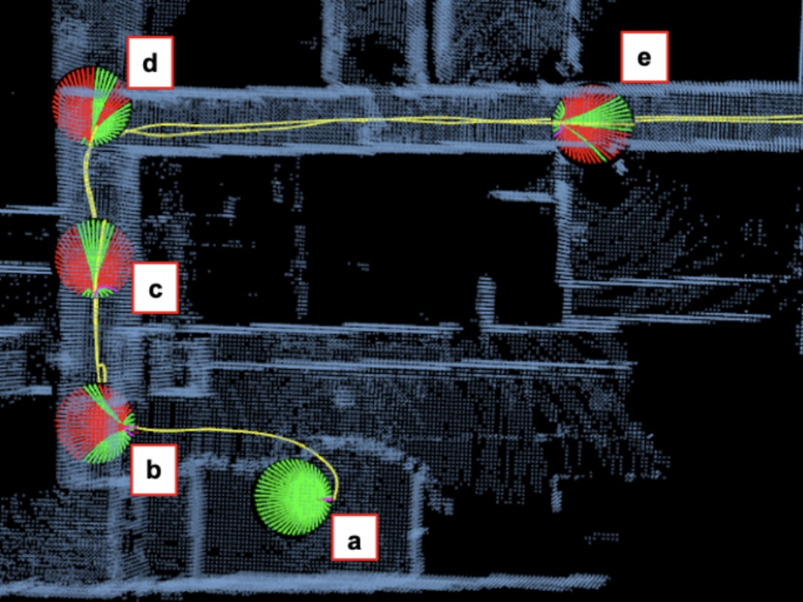
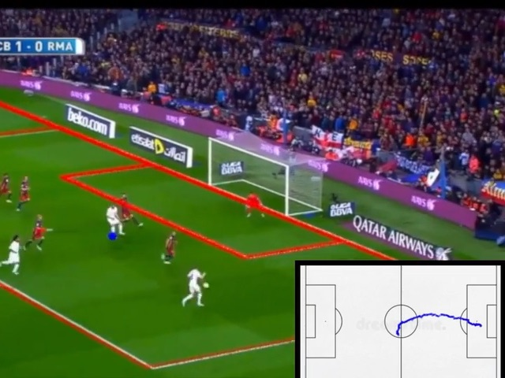
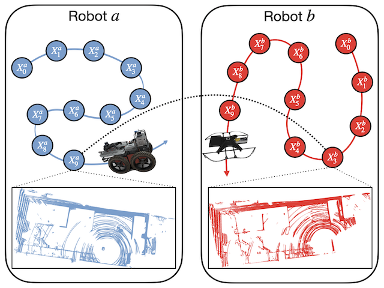

Eric Dexheimer
I am a PhD student in the Dyson Robotics Lab at Imperial College London, supervised by Prof. Andrew J. Davison.
I am interested in geometric computer vision, probabilistic inference, and nonlinear optimization.
Previously, I completed my Masters in Robotics at Carnegie Mellon University under the supervision of Prof. Michael Kaess.
Email /
Google Scholar /
Twitter
Your browser does not support the video tag.

Information-Theoretic Online Multi-Camera Extrinsic Calibration
Eric Dexheimer , Patrick Peluse, Jianhui Chen, James Pritts, Michael KaessIEEE Robotics and Automation Letters (RA-L) , presented at ICRA 2022
pdf /
code /
video
Your browser does not support the video tag.

GPS-Denied Global Visual-Inertial Ground Vehicle State Estimation via Image Registration
Yehonathan Litman*, Daniel McGann*, Eric Dexheimer , Michael Kaess
IEEE Intl. Conf. on Robotics and Automation, ICRA , May 2022
pdf /
video
LEO: Learning Energy-based Models in Factor Graph Optimization
Paloma Sodhi, Eric Dexheimer , Mustafa Mukadam, Stuart Anderson, Michael Kaess
Proc. Conf. on Robot Learning, CoRL , Nov 2021
arXiv /
video /
code /
project page /
blog
Your browser does not support the video tag.
Resilient and Modular Subterranean Exploration with a Team of Roving and Flying Robots
Sebastian Scherer et al.
Field Robotics , May 2022
pdf /
video
Your browser does not support the video tag.

Efficient Multiresolution Scrolling Grid for Stereo Vision-based MAV Obstacle Avoidance
Eric Dexheimer , Joshua G. Mangelson, Sebastian Scherer, and Michael KaessIEEE Intl. Conf. on Intelligent Robots and Systems, IROS , Oct 2020
pdf
Your browser does not support the video tag.

Efficient Trajectory Library Filtering for Quadrotor Flight in Unknown Environments
Vaibhav K. Viswanathan, Eric Dexheimer , Guanrui Li, Giuseppe Loianno, Michael Kaess, and Sebastian Scherer
IEEE Intl. Conf. on Intelligent Robots and Systems, IROS , Oct 2020
pdf /
video
Your browser does not support the video tag.

Automatic Field Tracking from Video
Eric Dexheimer , Yingda Hu
Your browser does not support the video tag.

Multi-Robot SLAM for Subterranean Environments
Eric Dexheimer
Deep-UV Microsphere Projection Lithography
Eric Dexheimer , Sung Jun Jang, and Hooman Mohseni
Optics Letters , 2015
High-Throughput Realization of an Infrared Selective Absorber/Emitter by DUV Microsphere Projection Lithography
Eric Dexheimer and Hooman Mohseni
Nanotechnology , 2016